01стены
Демонтаж стен и перегородок
Стоимость услугиот 699 ₽ / м²
Кирпич, пеноблок, гипсокартон и ненесущие бетонные конструкции.
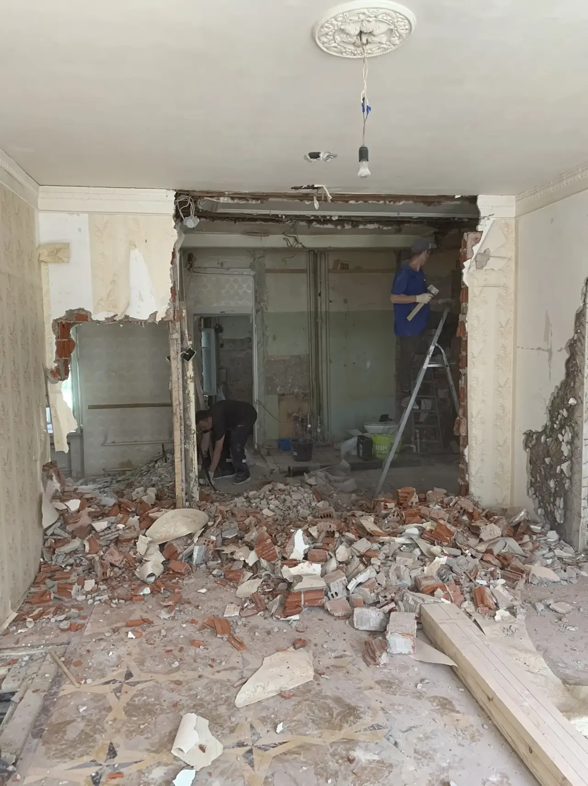
01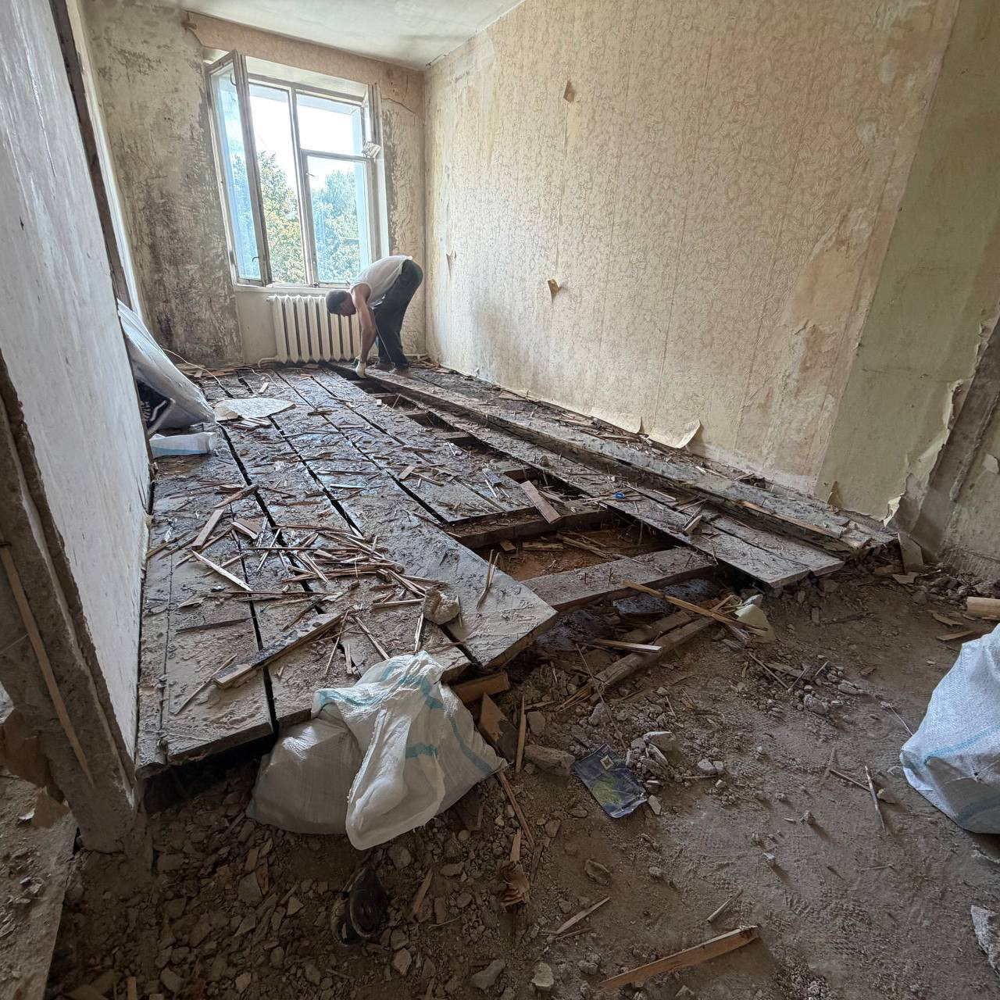
Квартиры, ванные комнаты, коммерческие помещения, стены и стяжка. Разберём, упакуем и вывезем по согласованной смете.
От первого сообщения до сдачи помещения. Состав работ и стоимость согласуем до выхода бригады.
Вы присылаете адрес, площадь и 5–10 фотографий объекта в Telegram.
По фотографиям называем ориентир по стоимости и задаём уточняющие вопросы.
Замерщик приезжает на объект, проверяет конструктив, доступ и объём мусора.
Фиксируем состав работ, сроки и стоимость до выхода бригады.
Защищаем лифт, стены, полы в общих зонах и отключаем нужные коммуникации.
Разбираем конструкции, соблюдаем режим тишины и требования объекта.
Собираем отходы в мешки, сортируем, грузим и вывозим с объекта.
Подметаем рабочую зону, делаем фотоотчёт и сдаём готовое помещение.
Листайте каталог: стоимость каждой услуги сразу указана в карточке.
Кирпич, пеноблок, гипсокартон и ненесущие бетонные конструкции.

01Итоговую цену считаем по реальному объёму работ. До начала демонтажа показываем, из чего складывается смета.
Кирпич, бетон, пеноблок, плитка и стяжка требуют разного инструмента и времени.
Считаем не только метры, но и фактический объём конструкций, которые нужно разобрать.
Учитываем этаж, наличие грузового лифта и расстояние до места погрузки.
Пропускной режим, парковка, защита общих зон и часы шумных работ влияют на организацию.
Заранее рассчитываем мешки, спуск, погрузку, транспорт и утилизацию.
Закрываем коммуникации, двери, окна и чистовые зоны, которые нужно сохранить.
Мы не показываем случайную цену: на стоимость влияют материал, толщина, этаж, доступ, объём и вывоз. После фото согласуем точную смету.
Слева отмечены выполненные объекты по Москве и области. Справа находятся фотографии работ. Отзывы и похожие примеры отправим по запросу.
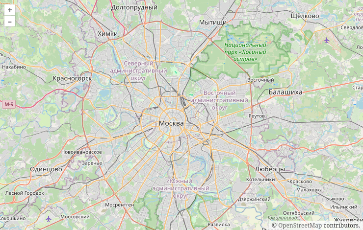
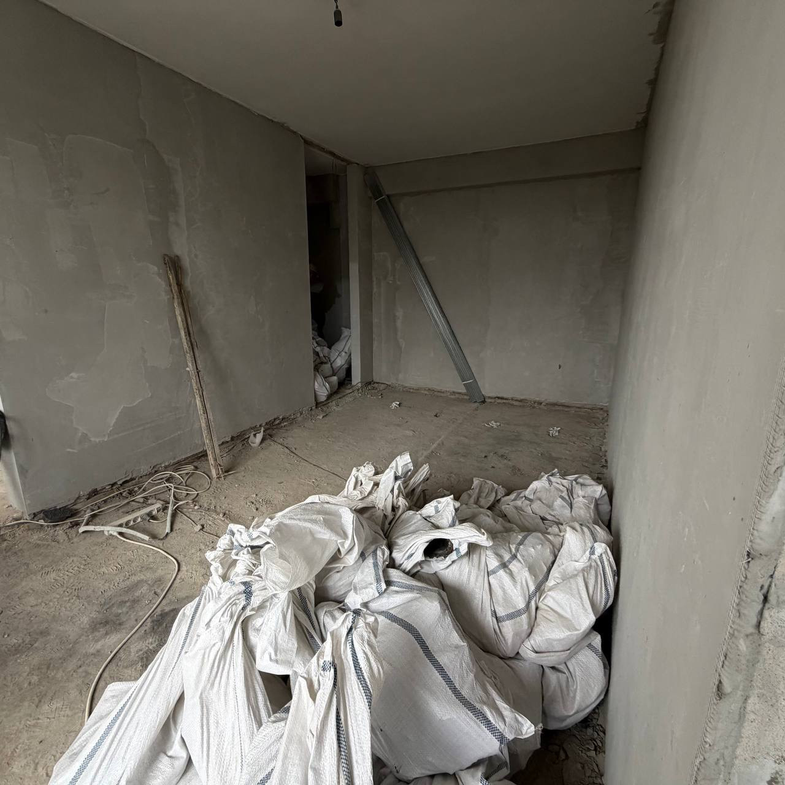
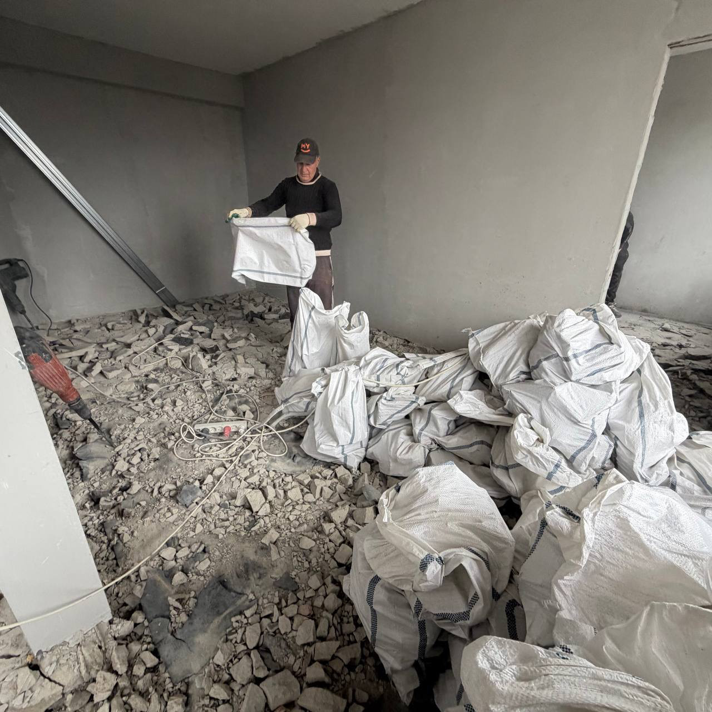
Д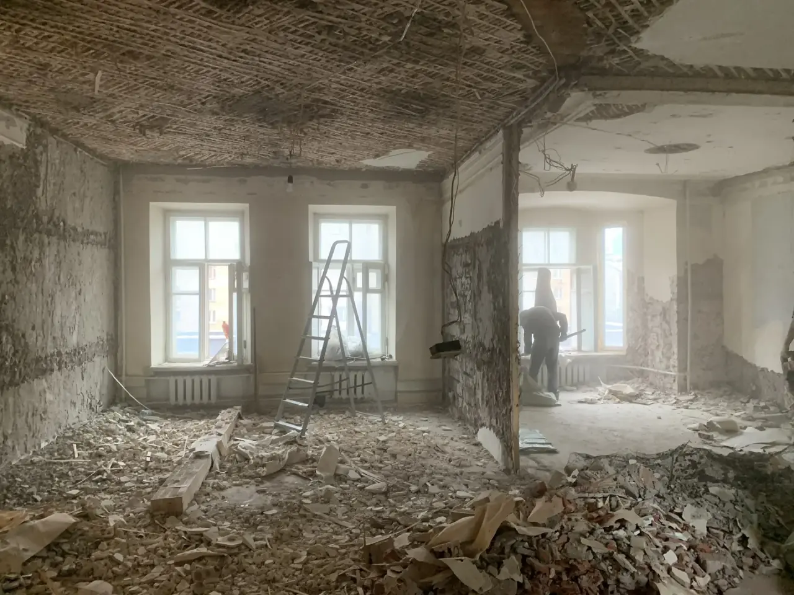
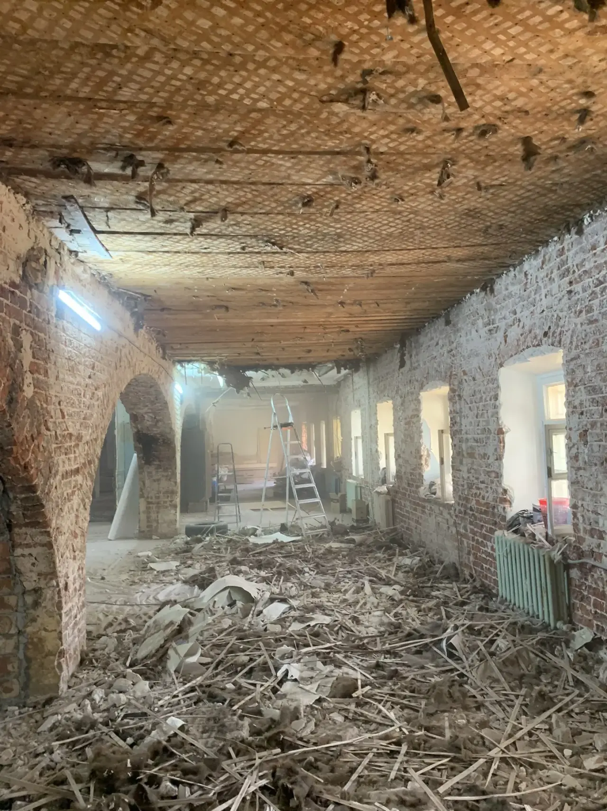
Пришлём в Telegram фото до и после, состав работ и отзывы по вашему типу демонтажа.
Запросить подборку ↗Ответили на частые вопросы. Свою ситуацию можно описать в Telegram.
Да. Для предварительной оценки пришлите 5–10 фото, площадь и короткое описание. Для сложной конструкции согласуем бесплатный осмотр.
Вывоз можем включить в общую смету или вынести отдельной строкой. Обе части стоимости согласуем до начала работ.
Да. Учитываем разрешённое время шумных работ, защищаем лифт и общие зоны, мусор выносим в мешках.
Можно. Берём как комплексные объекты под ключ, так и локальные задачи из каталога выше.
Состав документов согласуем перед работой. Подготовим смету, договор, акт и документы по вывозу, если их требует объект.
Специалист осмотрит помещение, уточнит объём демонтажа и вывоза, сделает замеры и подготовит понятную смету. Время выезда согласуем заранее.
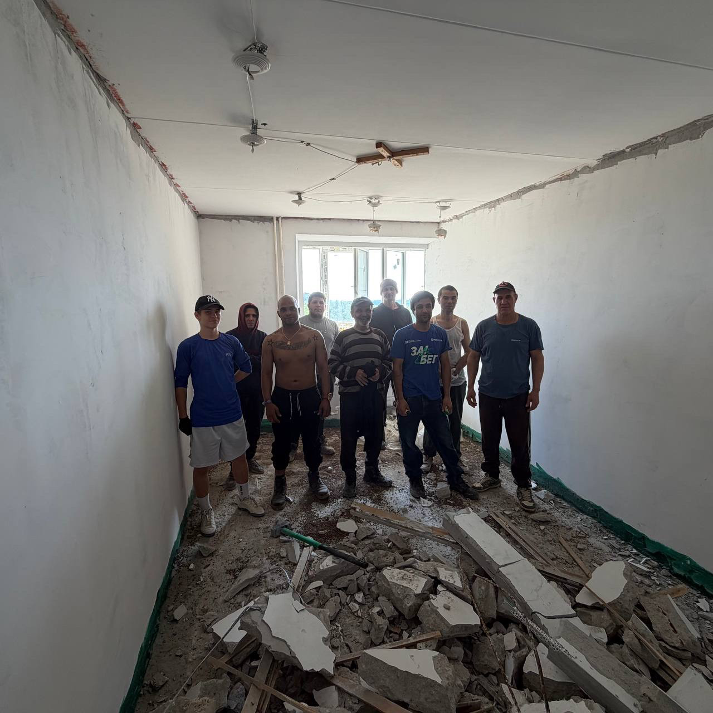
Более пяти лет выполняем внутренний демонтаж в квартирах и коммерческих помещениях Москвы и Московской области.
Перед началом разбираемся в конструкции объекта, защищаем то, что нужно сохранить, фиксируем смету и только после этого выходим на работы. Берём на себя демонтаж, упаковку, спуск и вывоз строительного мусора.
«Бригада приехала вовремя, отработали аккуратно и профессионально.»
«Все за собой убрали. Остались только положительные впечатления.»
«За один день разобрали полностью сантехническую кабину.»
На объект приезжает укомплектованная бригада. Подбираем инструмент под материал, объём и условия помещения.
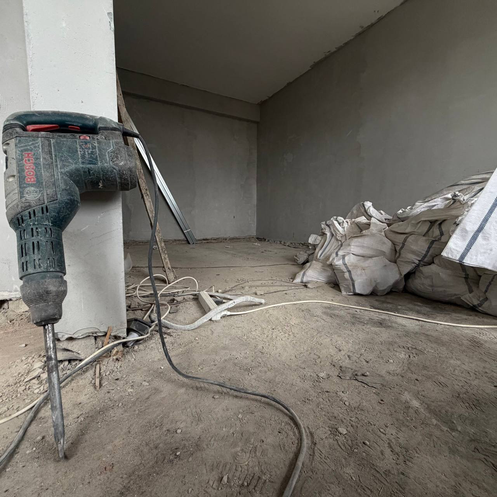
Для бетона, стяжки и прочных перегородок. Подбираем мощность под конкретную конструкцию.
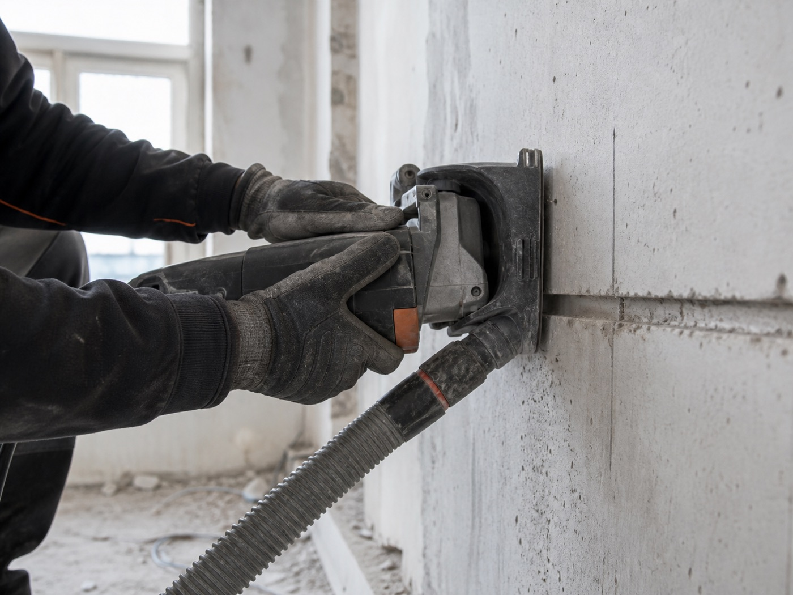
Аккуратно режем материалы с локальным контролем пыли и защищаем соседние поверхности.
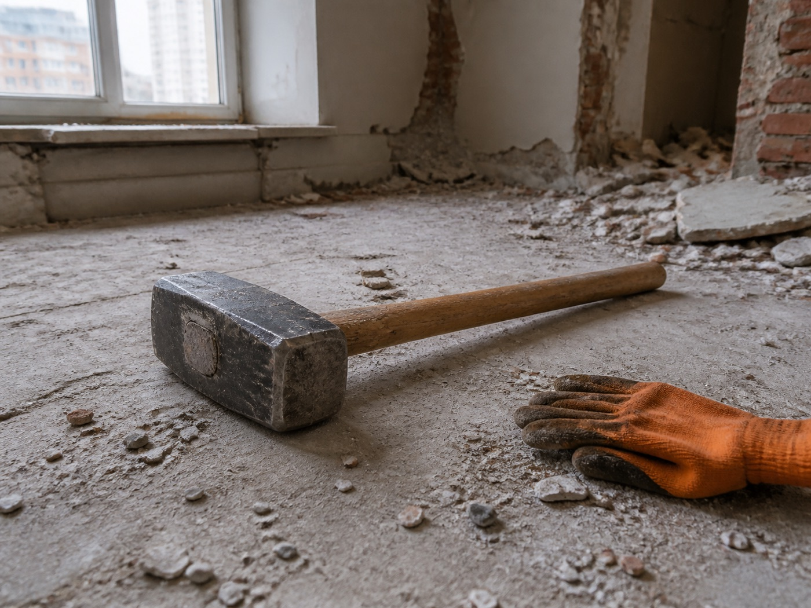
Для ручного разбора перегородок и конструкций там, где важны точность и контроль удара.
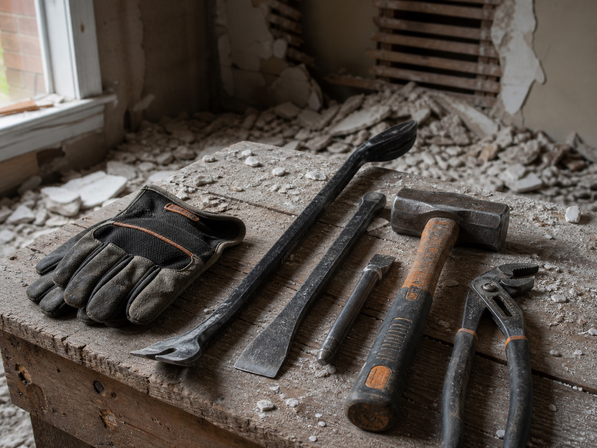
Ломы, монтировки, молотки и зубила для контролируемого разбора и аккуратного выноса.